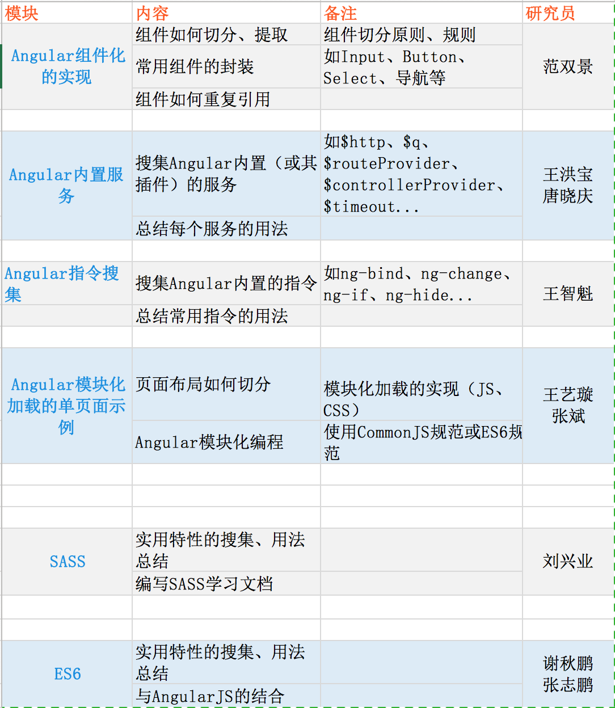

此次与会9人。 这周二的分享会进行得非常好，大家分享的内容有很多都特别实用，跟实际开发结合得很紧密，基本都能直接使用到项目中。
•双景分享单页面处理、数据处理、通过指令进行组件化的处理 •艺璇分享数据的处理：事件模型、服务单例模式、$rootScope模式 •兴业分享SASS的学习成果：常用的SASS语法 •志鹏分享ES6的学习成果：变量定义、类定义 •张斌分享单页面模块化的实现方案
下面是需要研究的新的技术问题： 